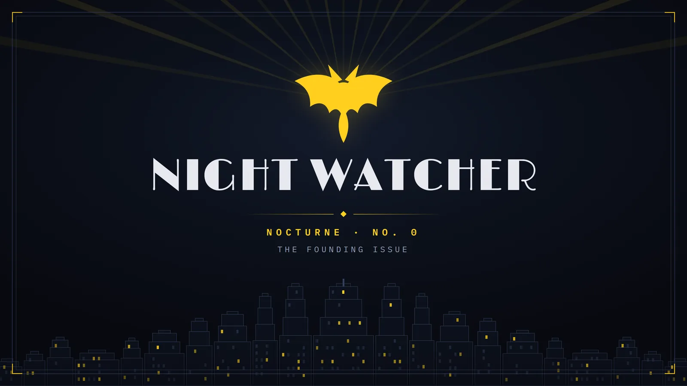

LatestNo. 0Sunday 27 September 2026
Somebody has to stay up with Batman, and we will

Sunday before the wire starts. No listing moved, and the paper still owes you a first night: who we are, who this is for, and the map next door.
A paper of
Night Watcher
Night
FinalSunday
The Night FinalEvery Sunday, latePrice: nothing. No account.
LatestNo. 0Sunday 27 September 2026

Sunday before the wire starts. No listing moved, and the paper still owes you a first night: who we are, who this is for, and the map next door.
No. 0 is the first. Back issues file here from next Sunday.